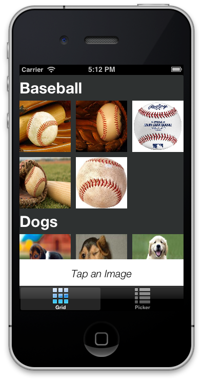
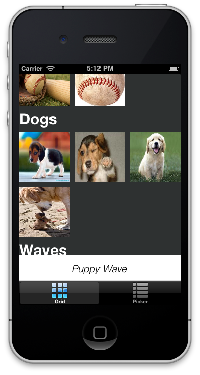
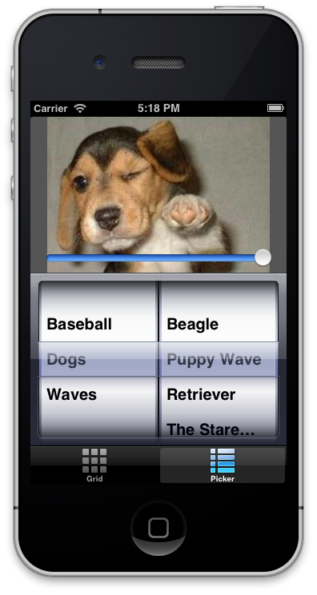
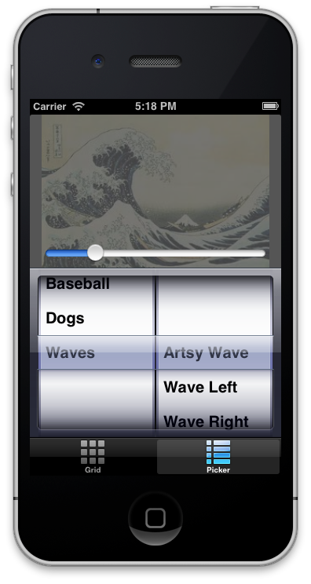
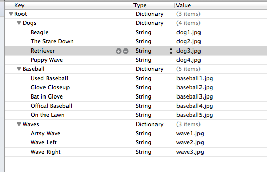
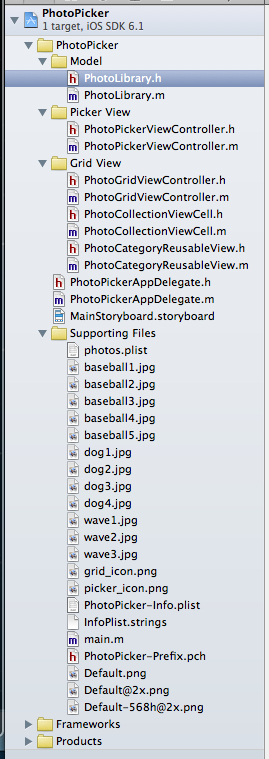

Friday, March 8, 2013 by 11:59p
UITabBarControllerUICollectionViewUIPickerViewUIImageViewUISliderYou will build a photo viewer application which offers two different ways for the user to view photos. The app will have two tabs where each tab is a different viewing experience of the same set of photos. The set of photos is divided into categories. Each category has a name and a set of photos.
The first tab will show the photos in their category grouping in a “grid” view.
This view is implemented with a UICollectionView. Tapping on an image in the view
will update the title label to reflect the title of the image that was tapped.
The second tab will show only one photo at a time. The photo to show will be
chosen from a UIPickerView. The first component of the picker view will
be a list of the photo categories. The second component will be a list of the
photo titles for the selected category. When a category is chosen, the user
can then choose between specific photos in the given category. Upon selection
of an image, the photo will be displayed to the user. The user will then have
the ability to adjust the opacity of the selected image via a UISlider control.
The opacity slider will affect the alpha setting of the UIImageView. Sliding
it to one extreme will render the image completely invisible, while at the other
extreme the image will be completely opaque.
I have prepared a demo video of the app.
The grid tab is composed of a UICollectionView. You will need to create a custom
UICollectionViewCell which will only have an IBOutlet property for a UIImageView
in the header. The implementation will be empty. This is for the individual cells
of the collection view. In addition, you will need to create a custom
UICollectionReusableView for the header. This will only have an IBOutlet property
for the UILabel in the header. Its implementation will also be empty. (By empty, I
mean that there is nothing to implement between the @implementation and @end.)
Your UIViewController will need to implement the
UICollectionViewDataSource Protocol as well as the
UICollectionViewDelegate Protocol. All of the methods are not required to be implemented. Only a couple
of them are needed.
Tapping on a cell in the collection view will cause the title label to be updated with the title of the image that was tapped.
An example might look like this:

After a cell has been tapped:

The picker tab does not require any additional helper classes like the grid tab, and in
fact, might be an easier place to start. Your view controller will have one IBOutlet to a
UIImageView, so that you can update the image property when an item in the UIPickerView
is selected. Also, you can update the alpha property when the UISlider is adjusted.
Your view controller will need to implement the UIPickerViewDataSource Protocol as well as the UIPickerViewDelegate Protocol. Like the datasource and delegate protocols in the grid view, you will not need to implement all of the methods of the protocols.
An example application might look like this:

With the opacity slider set:

You will store the photo library in a property list file which you can create
in Xcode via the menu New File => Resource => Property List. The file will
be composed of a dictionary where the keys represent the category titles, and
the values are in turn dictionaries with the key being the photo title, and
the value being the photo file name. The actual image files will simply be
bundled with the project. A good place to put them is in the “Supporting Files”
group in Xcode.
The property list file might look like this:

In order to read the property list file into an NSDictionary object,
you must first get the path to the resource. This can be done as follows:
NSString *path = [[NSBundle mainBundle] pathForResource:@"photos" ofType:@"plist"];
Note: The name of my property list is “photos.plist”
Once you have the path to the property list, you can read it into an
NSDictionary object as follows:
NSDictionary *photoList = [NSDictionary dictionaryWithContentsOfFile:path];
Part of the goal for this assignment is to become more familiar with the Foundation classes NSDictionary and NSArray.
I expect that you will need to consult the documentation to figure out how to use these classes appropriately. Of particular interest will be the sorting which can be found here.
You will create a model which will know all about the photos in your library.
It will be called PhotoLibrary. The public interface for your model will
be the following:
#import <Foundation/Foundation.h>
@interface PhotoLibrary : NSObject
- (NSUInteger)numberOfCategories;
- (NSString *)nameForCategory:(NSUInteger)category;
- (NSUInteger)numberOfPhotosInCategory:(NSUInteger)category;
- (NSString *)nameForPhotoInCategory:(NSUInteger)category
atPosition:(NSUInteger)position;
- (UIImage *)imageForPhotoInCategory:(NSUInteger)category
atPosition:(NSUInteger)position;
@end
You will use this model in both of your view controllers. You can create a separate model instance for each controller. (If you want to try to create a shared singleton instance, I encourage it, but it is not required.)
Here is what my project looks like for this assignment:

UIPickerView must reflect the photo being displayedUIImageView UIImageView can be adjusted by setting the alpha value
which is in the range of 0.0 to 1.0 mode option on the UIImageView to make sure that the image
in the picker tab is not distorted.UIImage object easily using the imageNamed: method.You are welcomed and encouraged to add additional features to your program. I will award extra credit for well implemented features enhancements.
By the due date/time you are expected to have committed your working xcode
project to your private github repository for CSCI 567 at the location
/project_2/PhotoPicker